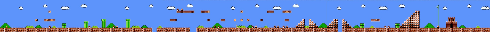

<html>
    <head>
    <link rel="stylesheet" href="style.css">
    </head>
    <body>
        <!---->
        <script src="https://cdnjs.cloudflare.com/ajax/libs/phaser/3.55.2/phaser.min.js"></script>
        <script src="creator.js"></script>
        <script src="mariocontra.js"></script>
    </body>
</html>
